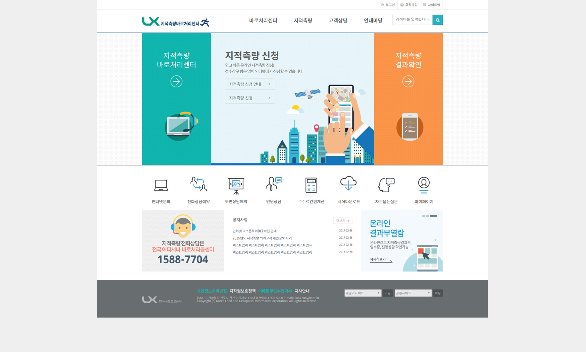
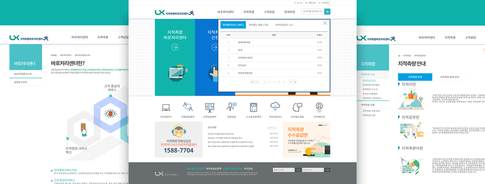

지적측량 바로처리센터사이트
OVERVIEW
기존에 있던 지적측량바로처리센터사이트를 재코딩하였다.
jquery로 박스슬라이드, 배너슬라이드, 패밀리사이트, Gnb, SubGnb, 빠른검색기능을 적용하였다.
기존과 다른 패턴배경을 디자인하여 적용하고, 퀵메뉴의 비주얼, 콜센터 디자인을 변경하였다.
지적측량바로처리센터 새로운 디자인
jquery를 이용하여 기존에 있었던 slider, bannerslider, gnb, subgnb, tab, familysite 사이트의 기능을 재 코딩하였다
포토샵을 활용하여, 기존에 있었던 디자인과 다른 배너 디자인으로 미적 아름다움을 한층 더하였다. 퀵메뉴의 디자인과 동작을 넣어 좀더 트렌드한 디자인으로 바꿔 디자인하였다.

